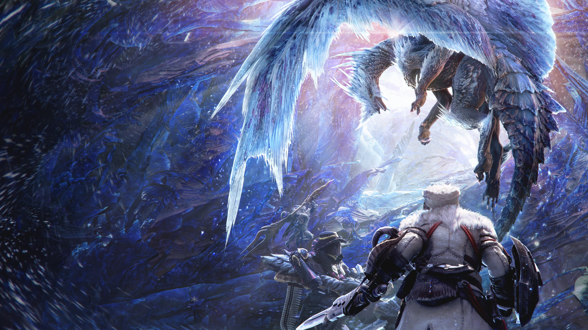
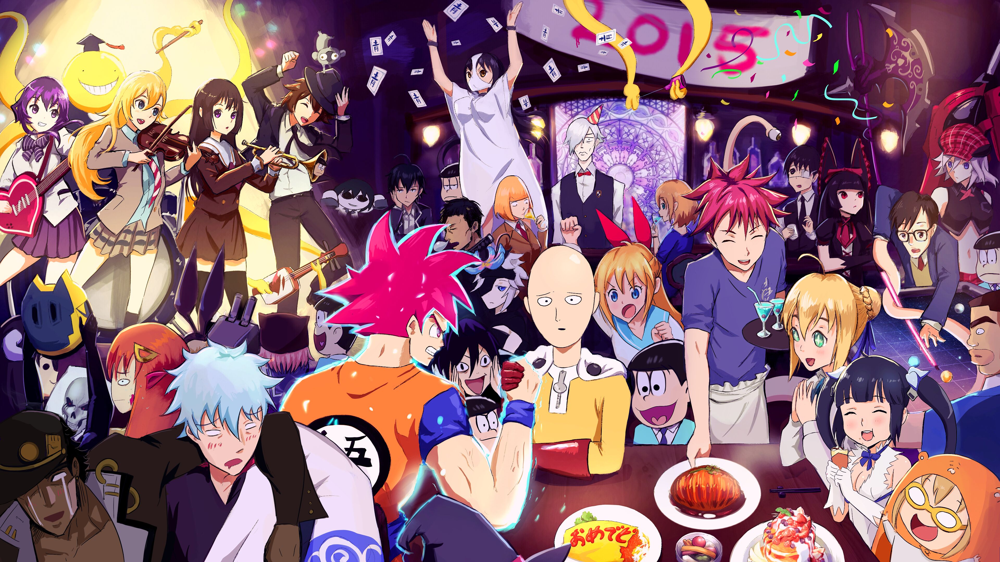

Monster Hunter World: Iceborne Revela DLC Épica com Novos Monstros e Desafios Gélidos

Vale a pena adquirir a expansão Monster Hunter World: Iceborne?
A expansão Icerbone inicia o verdadeiro desafio de Monster Hunter World, com uma campanha nova em folha e muitos inimigos poderosos e qe podem te matar com um único ataque se não tomar cuidado. Para inicia-la é preciso finalizar a história principal do jogo base, tendo um herói de no mínimo nível 16 e, é claro, tendo comprado a DLC. Feito isso vcê terá acesso a uma nova ilha cm cenários incríveis de neve e gelo, e muitos monstros de aparências e ataques únicos, bem como uma gama de armas e armaduras novas e cm estatísticas bem mais altas qe as do jogo principal. No entanto, para fazer as armaduras é preciso juntar recursos derrotando Bosses poderosos, e mesmo após obtê-las vcê ainda vai sofrer prqê os inimigos tiram mta vida e causam estrago sem dó, desafiando até msmo equipes completas e jogadores qe utilizam do SOS pra uma mãozinha de um nível mais alto. Com isso tenha em mente qe vcê vai morrer MUITO, então se qr algo mais casual compre apenas o jogo base, prqê nele é possível usar uma armadura poderosa desde o começo e o SOS facilita em todas as batalhas, o qe com toda certeza não ocorre em Icerborne, qe já é difícil e apelativo desde os primeiros minutos. Se vcê amou a o jogo principal e adora um desafio seja com ou sem companhia, então essa DLC foi feita pra vcê e vai acrescentar pelo menos mais 20 horas de jogo para vcê morrer e se estressar à vontade enqnto tenta caçar monstros gigantes e no fim acaba sendo caçado por eles.
Os caçadores de Monster Hunter World têm motivos para celebrar com a tão aguardada expansão de Iceborne. A Capcom anunciou hoje uma nova DLC repleta de conteúdo emocionante, prometendo estender a jornada dos jogadores em terras congeladas. A expansão inclui a chegada de monstros inéditos, cada um mais formidável do que o anterior. Prepare-se para enfrentar desafios gélidos enquanto explora áreas expansivas cobertas de neve. Além dos novos monstros, a DLC traz armas e armaduras exclusivas, proporcionando aos caçadores ainda mais opções para aprimorar seu arsenal. Os jogadores também podem aguardar eventos sazonais e missões especiais, aumentando a longevidade do jogo e incentivando a comunidade a se reunir para superar esses novos desafios. Com a promessa de uma experiência gelada e empolgante, a DLC de Monster Hunter World: Iceborne promete manter os caçadores ocupados e entretidos enquanto desbravam as terras congeladas em busca de glória e recompensas únicas. Prepare sua arma, vista sua melhor armadura e embarque nesta nova aventura congelante!
Still Here, a Nova Cinematic de League of Legends, Bate Recorde de Audiência com Incríveis 100 Milhões de Visualizações em Apenas uma Semana!

Still Here | Animação da Temporada 2024 – League of Legends
Por KirinPortal Em uma impressionante demonstração de poder e atração global, a mais recente cinematic de League of Legends, intitulada "Still Here", cativou os corações dos fãs ao redor do mundo, conquistando um recorde notável de 100 milhões de visualizações em apenas uma semana após seu lançamento. A cinematic, conhecida por suas animações deslumbrantes, trilha sonora envolvente e narrativa emocional, não apenas atendeu, mas superou as expectativas dos jogadores e entusiastas de eSports. Lançada como parte da campanha para uma nova temporada, "Still Here" imediatamente se tornou um fenômeno cultural. Os números impressionantes de visualizações não apenas destacam a paixão da comunidade de League of Legends, mas também reforçam o papel central que a narrativa desempenha na experiência dos jogadores. A Riot Games, desenvolvedora do League of Legends, expressou gratidão aos fãs pelo apoio entusiasmado e prometeu mais conteúdo envolvente no futuro. Além de estabelecer um novo recorde de audiência, "Still Here" gerou intensas discussões nas redes sociais, com fãs compartilhando teorias e elogios à qualidade cinematográfica da produção. A cinematic não apenas cativou os jogadores dedicados, mas também atraiu a atenção de espectadores que ainda não haviam explorado o mundo de League of Legends. À medida que a indústria de eSports continua a evoluir, eventos como esses destacam a crescente importância do storytelling e da produção de alta qualidade, solidificando League of Legends como não apenas um jogo, mas uma experiência cultural global. Com a promessa de mais cinematics e eventos emocionantes pela frente, os fãs aguardam ansiosos o próximo capítulo desta jornada épica.

Luto de Kishimoto e Eiichiro Oda emociona fãs de Dragon Ball
Há algumas notícias incrivelmente tristes vindo do Japão hoje, com a conta oficial de mídia social de Dragon Ball revelando que o lendário criador de mangá e artista de personagens Akira Toriyama faleceu aos 68 anos. Toriyama foi um ícone da indústria de mangá e anime. Ele ficou mais conhecido como o criador da série Dragon Ball depois de obter sucesso com Dr. Slump. Ele também teve um impacto absolutamente enorme na indústria de videogames – não apenas com incontáveis jogos Dragon Ball, mas também criando personagens famosos da série Dragon Quest da Square Enix e outros jogos como Chrono Trigger e Blue Dragon. De acordo com o comunicado oficial, Toriyama ainda tinha vários trabalhos que estava criando. Isso inclui o próximo anime Dragon Ball Daima. Uma adaptação do mangá Sand Land para videogame da Bandai Namco também será lançada no próximo mês.
Frieren: Prévia e sinopse do episódio 26